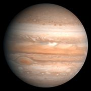

المشترى بالإنجليزية Jupiter ، هو أكبر كواكب المجموعة الشمسية وهو الكوكب الخامس في هذه المجموعة من حيث بعده عن الشمس. لمشتري كتلة أكبر من أي كوكب آخر في النظام الشمسي. فكتلته قدر كتلة الأرض 318 مرة، أما قوة الجاذبية فهي أكبر كثيرًا من جاذبية الأرض. ومن هنا فإن جسمًا يزن 45كجم على الأرض سيزن 120كجم على المشتري. وعلى الرغم من أن للمشتري كتلة كبيرة، إلا أن كثافته متدنية فهي تزيد قليلاً عن كثافة الماء، وتبلغ حوالي ربع كثافة الأرض.
